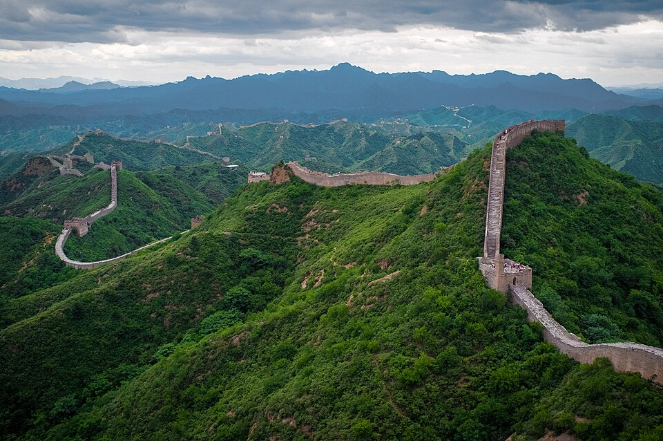

החומה הסינית |
|
|
 |
סיןהחומה הסינית היא מערכת ארוכה מאוד של חומות וביצורים שנבנו לאורך שנים רבות. חלקים ממנה עוברים על הרים וגבעות, ולכן הנוף מסביבה מרשים במיוחד. האתר מסקרן אותי בגלל הגודל העצום שלו, בגלל ההיסטוריה הארוכה, ובגלל החוויה של הליכה על חומה שנמשכת למרחקים גדולים. |